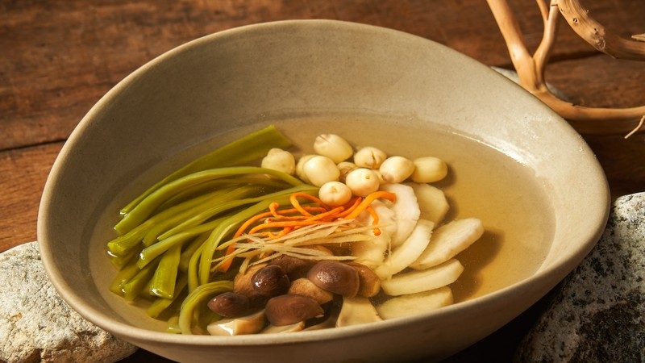
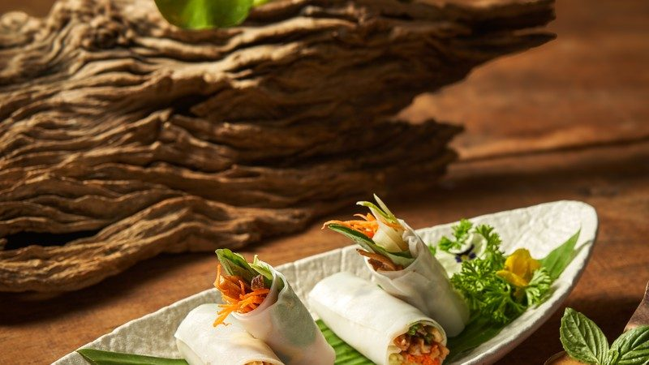
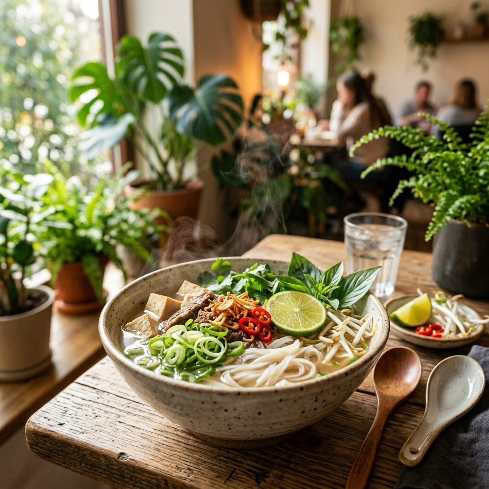
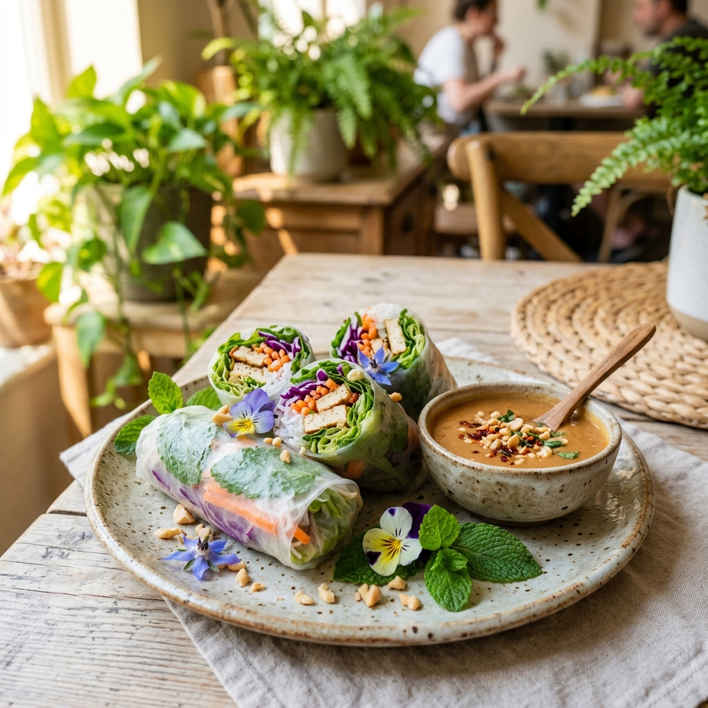

Ein dampfender Teller duftender Jasminreis, umringt von farbenfrohem Gemüse, knusprig mariniertem Tofu und aromatischen Wildkräutern – das ist die Essenz von Cơm Chay. Doch wo findet man diese traditionelle, rein pflanzliche Reistafel in der Hauptstadt? Wer ein unvergleichliches und nahrhaftes com chay vegan berlin sucht, wird im Vegan Garden fündig. Diese traditionelle Speise vereint die buddhistische Heilkunst Vietnams mit moderner Nachhaltigkeit. In diesem umfassenden Guide erfährst du alles über die faszinierende Geschichte von Cơm Chay, seine überragenden gesundheitlichen Vorteile und warum unser liebevoll zubereitetes Reisgericht in Berlin-Friedrichshain ein absolutes Highlight für Liebhaber der asiatischen Kulinarik und des bewussten Lebensstils ist.
Was ist Cơm Chay? Die reiche Tradition des vietnamesischen Veganismus
Cơm Chay ist weit mehr als nur ein einfaches Reisgericht. In der vietnamesischen Kultur ist es der Inbegriff für gesunde, bewusste und vor allem friedvolle Ernährung. Der Begriff setzt sich aus „Cơm“ (gekochter Reis) und „Chay“ (vegetarisch oder vegan) zusammen. Letzteres leitet sich historisch aus dem Sanskrit-Wort für Reinheit und Enthaltung ab. Traditionell bezeichnet Cơm Chay eine reichhaltig gedeckte, pflanzliche Reistafel, die ihren Ursprung in den buddhistischen Tempeln Vietnams hat. Heute steht Cơm Chay für ein modernes Bewusstsein, das Körper und Geist gleichermaßen nährt und dabei die tiefe Weisheit der ostasiatischen Heilkräuterkunde in den Alltag integriert.
Die buddhistischen Wurzeln der vegetarischen Reistafeln
Die Wurzeln der vietnamesischen „Chay“-Küche reichen über tausend Jahre zurück und sind untrennbar mit dem Mahayana-Buddhismus verbunden. In Vietnam ist es seit Jahrhunderten üblich, dass gläubige Buddhisten an den Tagen des Vollmonds (Ngày Rằm) und des Neumonds (Mồng Một) auf jegliche tierische Produkte verzichten. An diesen Feiertagen füllen sich die Tempel und Pagoden mit Menschen, die gemeinschaftlich „Cơm Chay Nhà Chùa“ (Tempel-Reis) genießen. Dieses Essen wird als ein Akt des Mitgefühls gegenüber allen Lebewesen verstanden. Die Mahlzeiten wurden traditionell von Mönchen und Nonnen zubereitet und zeichneten sich durch ihre Einfachheit, Frische und die harmonische Verwendung saisonaler, im Tempelgarten angebauter Gemüse und Kräuter aus.
Die Bedeutung von „Chay“ in der modernen vietnamesischen Gesellschaft
In den letzten Jahrzehnten hat sich die „Chay“-Küche aus den Tempelmauern in die pulsierenden Straßen der vietnamesischen Großstädte wie Hanoi und Saigon hinein ausgebreitet. Längst ist die rein pflanzliche Ernährung in Vietnam kein rein religiöses Ritual mehr, sondern ein Ausdruck eines modernen, gesundheitsbewussten Lebensstils. Vegane Restaurants (Quán Cơm Chay) erfreuen sich in allen Bevölkerungsschichten einer enormen Beliebtheit. Die moderne vietnamesische Küche versteht es meisterhaft, die jahrhundertealten Tempelrezepte mit kreativen Kochtechniken zu verbinden. Das Ergebnis ist eine unvergleichliche Aromenvielfalt, bei der frische Texturen, natürliche Gewürze und pflanzliche Proteine im Mittelpunkt stehen, ohne dass tierische Produkte vermisst werden.
Die kulinarische Vielfalt von Cơm Chay – Weit mehr als nur einfacher Reis
Das Besondere an einem authentischen Cơm Chay ist die meisterhafte Zusammenstellung der verschiedenen Komponenten auf dem Teller. Eine traditionelle vietnamesische Reistafel gleicht einem kulinarischen Mandala: Sie vereint unterschiedliche Farben, Texturen und Geschmacksrichtungen zu einer perfekten, harmonischen Einheit. Jede Zutat hat ihren festen Platz und erfüllt eine bestimmte Funktion für das geschmackliche Erlebnis sowie das körperliche Wohlbefinden. Im Vegan Garden Berlin zelebrieren wir diese Vielfalt und kombinieren traditionelle Zubereitungsarten mit zeitgemäßen, nährstoffreichen Zutaten.
Die perfekte Reisbasis: Jasminreis, Duftreis und rote Reissorten
Der Reis bildet das energetische und geschmackliche Fundament von Cơm Chay. Er ist in der asiatischen Philosophie das Symbol für das Element Erde und steht für Ruhe und Nährung. Wir verwenden in unserer Küche ausschließlich hochwertigen vietnamesischen Jasminreis (Gạo Hương Lài), der für sein zart blumiges Aroma und seine leicht klebrige, aber dennoch luftige Konsistenz bekannt ist. Für eine besonders nährstoffreiche Variante bieten wir auch roten Naturreis (Gạo Lứt) an. Dieser ungeschälte Reis ist reich an wertvollen Ballaststoffen, Spurenelementen und B-Vitaminen. Der Reis dient als idealer Geschmacksträger, der die aromatischen Saucen und die feinen Säfte der Gemüsebeilagen perfekt aufnimmt.
Hochwertige Proteine: Knuspriger Tofu, Tempeh und vietnamesische Mock-Meats
Ein vollwertiges Cơm Chay benötigt hochwertige Proteinquellen, um dem Körper langanhaltende Energie zu liefern. Die vietnamesische Küche ist weltberühmt für ihre Kunst der Tofuzubereitung. Wir marinieren unseren Bio-Tofu nach traditionellen Familienrezepten mit frischem Zitronengras, Knoblauch und Chili (Đậu Hũ Sả ớt) oder schmoren ihn in einer fruchtigen Tomatensauce (Đậu Hũ Sốt Cà Chua). Ergänzt wird dieses Angebot durch knuspriges Tempeh und unsere hausgemachten veganen Fleischalternativen (Thịt Chay) aus Weizeneiweiß (Seitan). Diese Mock-Meats haben in der asiatischen Tempelküche eine lange Tradition: Sie wurden entwickelt, um Gästen vertraute Texturen zu bieten und gleichzeitig das buddhistische Gebot des gewaltfreien Essens zu wahren.
Saisonale Gemüsebeilagen, fermentierte Köstlichkeiten und Dips
Die lebendige Frische erhält Cơm Chay durch eine Vielzahl von vitaminschonend gegarten Gemüsebeilagen. Knackiger Wasserspinat (Rau Muống), zarter Pak Choi oder aromatischer Lotuswurzel-Salat bringen Farbe und Vitalität auf den Teller. Ein unverzichtbares Element ist zudem das Đồ Chua – süß-sauer eingelegte Karotten und Rettich, die für eine angenehme Frische sorgen. Abgerundet wird das Gericht durch unsere hausgemachte vegane Nước Chấm Chay. Diese traditionelle vietnamesische Dipsauce stellen wir auf Basis von fermentierten Sojabohnen, frischem Ananassaft, Limettensaft und Chilis her. Sie liefert das unverzichtbare Umami-Aroma, das die verschiedenen Komponenten des Tellers harmonisch miteinander verbindet.

Warum ist Cơm Chay so gesund und nährstoffreich?
In der heutigen Zeit suchen immer mehr Menschen nach einer Ernährungsform, die nicht nur hervorragend schmeckt, sondern den Körper optimal mit Vitalstoffen versorgt. Cơm Chay ist das perfekte Beispiel für eine solche funktionelle, ganzheitliche Ernährung. Die Kombination aus ballaststoffreichem Reis, hochwertigen pflanzlichen Proteinen, vitaminschonend zubereitetem Gemüse und der Heilkraft frischer Kräuter macht dieses Gericht zu einer wahren Quelle für Gesundheit und Vitalität, ohne den Organismus schwer zu belasten.
Komplexe Kohlenhydrate und die Mikronährstoffe des Reises
Der im Cơm Chay verwendete Reis liefert dem Körper hochwertige, komplexe Kohlenhydrate. Diese werden vom Organismus nur langsam abgebaut, was zu einem konstanten und langanhaltenden Blutzuckerspiegel führt. Heißhungerattacken gehören damit der Vergangenheit an. Insbesondere der ungeschälte rote Naturreis ist ein echtes Superfood: Er enthält eine Fülle an essenziellen Mikronährstoffen wie Magnesium, Zink und Eisen sowie wichtige B-Vitamine (B1, B3, B6), die eine zentrale Rolle im Energiestoffwechsel und bei der Regeneration des Nervensystems spielen. Reis ist zudem von Natur aus glutenfrei und somit extrem leicht verdaulich und allergenarm.
Die Bedeutung einer ausgewogenen Reistafel für die Darmgesundheit
Ein starkes Immunsystem und allgemeines Wohlbefinden beginnen im Magen-Darm-Trakt. Cơm Chay unterstützt die Verdauungsfunktion auf natürliche Weise. Die Kombination aus ballaststoffreichen Gemüsesorten und fermentierten Komponenten wie unserem Đồ Chua (eingelegtes Gemüse) liefert wertvolle Präbiotika. Diese dienen den nützlichen Darmbakterien als Nahrung und fördern eine gesunde, ausgeglichene Darmflora. Gemäß den offiziellen Leitlinien der Weltgesundheitsorganisation (WHO) trägt eine ballaststoffreiche und pflanzenbetonte Ernährung maßgeblich dazu bei, das Risiko für chronische Magen-Darm-Erkrankungen zu minimieren und die Nährstoffaufnahme im Körper zu optimieren ([4]).
Wissenschaftliche Erkenntnisse über pflanzenbetonte Ernährung
Die moderne Ernährungsmedizin bestätigt zunehmend die gesundheitlichen Vorteile, die die vietnamesischen Tempelköche bereits vor Jahrhunderten intuitiv nutzten. Die Deutsche Gesellschaft für Ernährung (DGE) betont in ihren aktuellen Stellungnahmen, dass eine ausgewogene, pflanzenbetonte Ernährungsweise nachweislich das Risiko für weit verbreitete Zivilisationskrankheiten wie Typ-2-Diabetes, Bluthochdruck und Herz-Kreislauf-Erkrankungen signifikant senken kann ([1]). Zudem hebt die Harvard T.H. Chan School of Public Health hervor, dass der regelmäßige Verzehr von pflanzlichen Proteinquellen wie Tofu und Hülsenfrüchten in Kombination mit frischem Gemüse die Langlebigkeit fördert und entzündliche Prozesse im Körper hemmt ([2]).
Lust auf frische, gesunde vietnamesische Küche?
Besuche uns im Herzen von Berlin-Friedrichshain und genieße authentische vegane Spezialitäten!
Frische Kräuter und Gewürze: Die heilenden Begleiter des Reisgerichts
Die vietnamesische Kulinarik beruht auf dem tiefen Verständnis, dass Nahrung auch Medizin ist. Ein authentisches Cơm Chay ist niemals komplett ohne ein üppiges Bouquet aus frischen Wildkräutern und wärmenden Gewürzen. Diese dienen nicht nur der optischen und geschmacklichen Verfeinerung, sondern balancieren das Gericht energetisch nach den Prinzipien von Yin und Yang aus. Kühlende Gemüsesorten werden ganz bewusst mit wärmenden Gewürzen wie Ingwer oder Chili kombiniert, um den Energiefluss im Körper harmonisch anzuregen und eine optimale Verdauung zu gewährleisten.
Heilwirkung von Koriander, Perilla und thailändischem Basilikum
Die Kräuter, die wir im Vegan Garden über unser Cơm Chay streuen, sind wahre Kraftpakete der Natur. Frischer echter Koriander (Rau Mùi) und Perilla bzw. Rotes Shiso (Tía Tô) zeichnen sich durch ein extrem hohes Vorkommen an Antioxidantien, essenziellen Ölen und bioaktiven sekundären Pflanzenstoffen aus. Wissenschaftliche Untersuchungen, die in den Datenbanken der National Institutes of Health (PubMed) dokumentiert sind, belegen nachweislich die ausgeprägten entzündungshemmenden, antimikrobiellen und zellschützenden Eigenschaften dieser traditionellen Heilkräuter ([3]). Sie unterstützen aktiv die körpereigene Entgiftung, regen die Bildung von Verdauungssäften an und sorgen dafür, dass selbst reichhaltige Mahlzeiten federleicht im Magen liegen.
Die therapeutische Wirkung von Ingwer und Zitronengras
Zitronengras (Sả) und Ingwer (Gừng) sind die aromatischen Hauptdarsteller in unseren Marinaden für Tofu und Seitan. Zitronengras enthält den wertvollen Wirkstoff Citral, der stark antibakteriell wirkt und krampflösende Eigenschaften im Magen-Darm-Bereich besitzt. Frischer Ingwer hingegen bringt die notwendige thermische Wärme (Yang) in das Gericht. Seine Scharfstoffe (Gingerole) regen die Durchblutung an, fördern die Gallenproduktion und wirken nachweislich gegen Übelkeit und Völlegefühl. Diese harmonische Symbiose aus Aromatherapie und Phytomedizin macht jeden Bissen unseres veganen Reisgerichts zu einer Wohltat für dein gesamtes System.


Cơm Chay Vegan Berlin – Unsere Philosophie und Interpretation im Vegan Garden
In der pulsierenden Food-Metropole Berlin gibt es unzählige gastronomische Angebote. Dennoch bleibt es eine Seltenheit, die wahre, unverfälschte Seele der traditionellen Tempelküche Vietnams zu erleben. Unser Anliegen im Vegan Garden Berlin ist es, diese Lücke zu schließen. Wir interpretieren das klassische Cơm Chay auf eine moderne, kreative und kompromisslos gesunde Weise. Bei uns bedeutet vegane Ernährung nicht Verzicht, sondern die Entdeckung einer grenzenlosen Vielfalt an Aromen, die Körper und Geist in Einklang bringen.
Authentische Rezepte und Handarbeit von Gründerin Huong Nguyen
Das Geheimnis hinter der Qualität unseres Cơm Chay liegt in der Expertise und der Leidenschaft unserer Gründerin und Chefköchin Huong Nguyen. Mit über 15 Jahren Erfahrung in der kulinarischen Szene Hanois und Berlins wacht sie beharrlich über die Authentizität jedes einzelnen Gerichts. Jede Sauce, jede Marinade und jede Paste wird täglich in liebevoller Handarbeit frisch zubereitet. Wir verwenden für unser Cơm Chay ausschließlich frische vietnamesische Kräuter und Zutaten und verzichten konsequent auf den Einsatz von künstlichen Geschmacksverstärkern (Glutamat), chemischen Konservierungsstoffen oder raffiniertem Industriezucker. So garantieren wir dir ein absolut reines und ehrliches Geschmackserlebnis.
Nachhaltigkeit: Regionale Zutaten für Berliner Genuss
Für uns hat eine gesunde Ernährung nur dann Bestand, wenn sie im Einklang mit unserer Umwelt steht. Daher sind Nachhaltigkeit und unsere Philosophie der feste Kompass für unser tägliches Handeln. Wir beziehen unsere frischen Gemüsebeilagen und Kräuter, wann immer es die Saison erlaubt, direkt von ökologischen Erzeugern aus dem Berliner Umland und Brandenburg. Dies sichert kürzeste Transportwege, unterstützt die heimische Landwirtschaft und garantiert ein Maximum an Frische und Nährstoffen auf deinem Teller. Für die unverzichtbaren asiatischen Spezialitäten arbeiten wir eng mit ausgewählten Importeuren zusammen, die faire Arbeitsbedingungen und nachhaltige Anbaumethoden in den Herkunftsländern garantieren.
Cơm Chay zu Hause selber kochen: Wertvolle Tipps für die Küche
Die Zubereitung einer traditionellen vietnamesischen Reistafel in den eigenen vier Wänden ist eine wunderbare Möglichkeit, sich kreativ auszutoben und ein Stück asiatische Kultur in den Alltag zu holen. Es ist ein meditativer Prozess, die verschiedenen Komponenten sorgsam vorzubereiten und geschmacklich aufeinander abzustimmen. Mit ein paar einfachen Kniffen und der richtigen Technik gelingt dir auch zu Hause ein hervorragendes, gesundes Reisgericht, das deine Liebsten begeistern wird.
Die Kunst des perfekten vietnamesischen Duftreises
Der perfekte Reis ist das Herzstück des Gerichts. Um ein authentisches Ergebnis zu erzielen, solltest du den Jasminreis vor dem Kochen mindestens drei- bis viermal in einer Schüssel mit kaltem Wasser gründlich waschen. Reibe die Reiskörner dabei sanft zwischen den Handflächen. Dieser Vorgang entfernt die überschüssige Stärke an der Oberfläche der Körner und sorgt dafür, dass der Reis nach dem Garen wunderbar fluffig bleibt und nicht matschig wird. Ein echter Profi-Tipp aus Vietnam: Lege während des Kochvorgangs ein frisches Pandanblatt (Lá Dứa, im Asialaden erhältlich) mit in den Reiskocher oder Topf. Dies verleiht dem Reis ein unvergleichlich nussiges und süßliches Aroma, das perfekt zu den herzhaften Beilagen passt.
Die perfekte vegane Sauce (Nước Chấm Chay) selbst zubereiten
Die Sauce ist das verbindende Element des Cơm Chay. Auf unserer Website findest du viele traditionelle und moderne vegane vietnamesische Rezepte, die dir als Inspiration dienen können. Für eine schnelle, köstliche Nước Chấm Chay zu Hause mischst du vier Esslöffel warmes Wasser mit zwei Esslöffeln Rohrohrzucker, bis sich dieser vollständig aufgelöst hat. Füge anschließend zwei Esslöffel frischen Limettensaft, drei Esslöffel hochwertige, glutenfreie Sojasauce und einen Esslöffel fein pürierte Ananas hinzu. Die Ananas liefert die natürliche Süße und die enzymatische Tiefe, die sonst durch traditionelle Fischsauce erzeugt wird. Runde die Sauce mit fein gehacktem Knoblauch und frischen Bird’s Eye Chilis ab – fertig ist dein perfekter Umami-Dip!
Lust auf frische, gesunde vietnamesische Küche?
Besuche uns im Herzen von Berlin-Friedrichshain und genieße authentische vegane Spezialitäten!
Dein kulinarischer Besuch im Vegan Garden in Berlin-Friedrichshain
Obwohl das Selberkochen eine wunderbare Erfahrung ist, erfordert die Zusammenstellung eines facettenreichen Cơm Chay mit all seinen verschiedenen Gemüsebeilagen, hausgemachten Proteinen und speziellen Wildkräutern im Alltag oft einen erheblichen zeitlichen Aufwand. Im Vegan Garden Berlin nehmen wir dir diese Arbeit sehr gerne ab. Wir laden dich ein, dich an unseren liebevoll gedeckten Tisch zu setzen, die Hektik der Großstadt hinter dir zu lassen und dich von uns mit den besten Kreationen der vietnamesischen Pflanzenküche verwöhnen zu lassen.
Die grüne Wohlfühloase in der Frankfurter Allee
Du findest unser Restaurant in Berlin-Friedrichshain in der Frankfurter Allee 21. Wir haben dort einen Ort geschaffen, der eine Oase der Ruhe inmitten des quirligen Stadtteils ist. Unser Innenraum ist geprägt von warmen Holztönen, gemütlichen Nischen und einer Vielzahl lebendiger grüner Pflanzen, die die Atmosphäre eines asiatischen Gartens verströmen. Bei uns kannst du in absolut entspanntem Ambiente speisen – sei es für ein vitalisierendes, leichtes Mittagessen während der Arbeitspause oder für ein ausgiebiges, gemütliches Abendessen mit Freunden und Familie. Unser herzliches und aufmerksames Service-Team sorgt dafür, dass dein Besuch zu einem rundum harmonischen Erlebnis wird.
Vegan Guide Berlin: Entdecke unsere Speisekarte und kulinarische Vielfalt
Als leidenschaftliche Botschafter des gesunden und nachhaltigen Lifestyles möchten wir dir helfen, die kulinarischen Schätze der Hauptstadt mühelos zu entdecken. Daher haben wir einen fundierten Ratgeber verfasst: unser Vegan Guide für Berlin bietet dir wertvolle Insider-Tipps für ein bewusstes, pflanzliches Leben in der Spree-Metropole. Wir laden dich ein, einen Blick in unsere Speisekarte zu werfen. Neben unserem traditionellen Cơm Chay findest du dort eine Fülle an weiteren authentischen Spezialitäten wie dampfende Pho-Suppen, knackige Sommerrollen und cremige Currys – allesamt frisch, rein pflanzlich und mit maximaler Liebe für dich zubereitet.

📍 Besuche Vegan Garden Berlin
Adresse: Frankfurter Allee 21, 10247 Berlin (Friedrichshain)
Öffnungszeiten: Dienstag bis Sonntag: 12:00 – 22:00 Uhr (Montag Ruhetag)
Reservierung: Online Tisch reservieren oder telefonisch.
Fazit
Cơm Chay ist weit mehr als ein einfacher kulinarischer Trend – es ist ein jahrhundertealtes, ganzheitliches Ernährungskonzept, das die reiche Kultur und die tiefe Naturverbundenheit Vietnams widerspiegelt. In unserem Restaurant Vegan Garden in Berlin-Friedrichshain erwecken wir diese traditionsreiche Tempelküche täglich zu neuem Leben. Die harmonische Kombination aus feinstem Duftreis, proteinreichem Tofu, vitaminschonend zubereitetem Saisongemüse und der therapeutischen Kraft frischer Wildkräuter schenkt dir ein Geschmackserlebnis, das deinen Körper langanhaltend stärkt und deine Sinne berührt. Ob du die asiatische Küche liebst, dich bewusster ernähren möchtest oder einfach ein gemütliches, gesundes Essen in einer grünen Oase suchst – unser Cơm Chay wird dich begeistern. Wir laden dich herzlich ein, uns in der Frankfurter Allee zu besuchen, durch unsere digitale Speisekarte zu stöbern und die vitalisierende Kraft des traditionellen veganen Reises selbst zu erleben. Wir freuen uns sehr darauf, dich bald bei uns als Gast begrüßen zu dürfen!
- [1] Deutsche Gesellschaft für Ernährung (DGE). (2024). Pflanzenbetonte Ernährung – gesund und nachhaltig. Abgerufen von https://www.dge.de/
- [2] Harvard T.H. Chan School of Public Health. (2023). The Nutrition Source: Herbs and Spices and Plant-based Proteines. Abgerufen von https://www.health.harvard.edu/
- [3] National Institutes of Health (PubMed). (2021). Antioxidant, anti-inflammatory and antimicrobial properties of Coriandrum sativum and Perilla frutescens in traditional cuisines. Abgerufen von https://pubmed.ncbi.nlm.nih.gov/
- [4] World Health Organization (WHO). (2023). Diet, nutrition and the prevention of chronic diseases: WHO guidelines on fiber and whole plant-food intake. Abgerufen von https://www.who.int/
Lust auf frische, gesunde vietnamesische Küche?
Besuche uns im Herzen von Berlin-Friedrichshain und genieße authentische vegane Spezialitäten!
TISCH JETZT RESERVIEREN